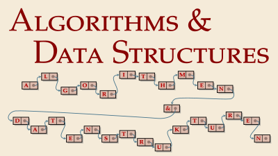

CS 210 – Algorithms and Data Structures (Summer 2026)

Algorithms and Data Structures (CS 210) is a first-year module covering the fundamental algorithms and data structures of computer science. Apart from learning about the theoretical basic toolbox, we will also implement the algorithms and data structures in modern Java.
Quick links
Slido ⋅ YouTube ⋅ ILIAS ⋅ Campuswire ⋅ Question Gallery ⋅ Units
Topics
- asymptotic notation and analysis
- sorting algorithms
- lists, stacks, queues
- binary search trees
- hashing
- graph traversal
The module is taught in German.
Vorlesungen
Die Vorlesungen werden live auf YouTube (YouTube Channel) gestreamt und aufgezeichnet (auf Best-Effort-Basis). Aktive Teilnahme an den synchronen Vorlesungen wird erwartet.
Vorlesungszeiten und -räume finden Sie auf
Marvin.
Die Zeiten auf Marvin sind c.t.
(Beginn ist 15 Minuten nach der vollen Stunde).
Units
Das Modul besteht aus den folgenden Abschnitten; jede Unit hat eine Unit-Unterseite (in der Tabelle verlinkt) mit Folien, Vorlesungsnotizen und Videoaufzeichnungen für diese Unit.
| Woche | w/c (Mon) | Unit | Übungen |
|---|---|---|---|
| 1 | 2025-04-13 | Unit 0: Administrativa | |
| —keine Vorlesung Mi, 15. April— | |||
| 2 | 2025-04-20 | Unit 1: Motivation | Blatt 1 ⋅ en |
| Unit 2: Programmierumgebung | |||
| 3 | 2025-04-27 | Unit 3: Mathematische Grundlagen | Blatt 2 ⋅ en |
| 4 | 2025-05-04 | Unit 4: Case Study: Union-Find | Blatt 3 ⋅ en |
| 5 | 2025-05-11 | Unit 5: Maschinen & Modelle | Blatt 4 ⋅ en |
| Unit 6: Algorithm Science | |||
| 6 | 2025-05-18 | Unit 6: Algorithm Science | Blatt 5 ⋅ en |
| Unit 7: Sortieren | 5-1 data.csv | ||
| 7 | 2025-05-25 | Unit 7: Sortieren | Blatt 6 ⋅ en |
| Pfingstmontag | $\to$ 25 Mai keine Vorlesung | ||
| 8 | 2025-06-01 | Unit 8: Dynamische Listen | Blatt 7 ⋅ en |
| 9 | 2025-06-08 | Unit 9: Suchbäume | Blatt 8 ⋅ en |
| 10 | 2025-06-15 | Unit 9: Suchbäume | Blatt 9 ⋅ en |
| 11 | 2025-06-22 | Unit 10: Hashing | Blatt 10 ⋅ en |
| —Mi, 24. Juni Videos statt live Vorlesung— | |||
| 12 | 2025-06-29 | Unit 11: Graphen | Blatt 11 ⋅ en |
| 13 | 2025-07-06 | Unit 12: Ausblick | Blatt 12 ⋅ en |
| 14 | 2025-07-13 | Wiederholung, Klausur Q&A |
Übungen
Es gibt wöchentliche Übungsblätter mit Übungsaufgaben und Gruppeneinreichungen. Weitere Details werden in der Vorlesung bekannt gegeben.
Lösungen werden in kleinen Gruppen in den Übungen besprochen. Die Gruppenzuteilung und Abgaben finden Sie im ILIAS-Kurs.
Online Tools
Wir verwenden diverse Tools, die sich für große Vorlesungen bewährt haben.
Campuswire
Campuswire
ist unsere primäre Kommunikationsplattform.
Alle Fragen zum Modul sollten auf Campuswire im Frage- und Antwortforum, dem “class feed”, gepostet werden.
Posts können anonym sein, und Sie sind explizit aufgefordert, auch Fragen von Kommiliton:innen zu beantworten!
Sie können die Plattform auch für Diskussionen in den Chatrooms nutzen (ob mit Bezug zum Model oder nicht).
ILIAS
Wir verwenden das offizielle Lernmanagementsystem der Universität ILIAS für Ankündigungen und prüfungsbezogene Informationen.
Slido
Während der Live-Vorlesungen werden wir Slido für interaktive Teile wie Polls verwenden. Sie können dort auch während der Vorlesung, – auf Wunsch anony, – Fragen stelle, die wir in der Vorlesung klären können.
Exam Question Gallery
We maintain a collaborative exam question gallery on Papeeria.
(You may have to create a free account.)
Join us in making this a great resource for preparation for the exam –
the better your question, the more likely they are to inspire the final exam.
This is also a chance to learn or practice some $\LaTeX{}$.
Klausur & Modulnote
Die Modulnote basiert auf der Abschlussklausur.
Die Termine der Klausur werden zentral festgelegt und sind auf Marvin einsehbar.
Für die Zulassung zur Klausur müssen Sie eine ausreichende Leistung in den Übungen erbringen. Weitere Details werden in der Vorlesung bekannt gegeben.
Bücher & Quellen
Die beiden Hauptquellen sind
- Sedgewick, Wayne: Algorithms 4th ed (2011), Pearson
Deutsche Übersetzung: ebook ⋅ Druckausgabe - Nebel, Wild, Entwurf und Analyse von Algorithmen, 2. Auflage (2018), Springer
Unibibliothek: ebook ⋅ Druckausgabe
Beachten Sie, dass die Vorlesung nicht streng einem einzigen Lehrbuch folgt; die Unit-Unterseiten enthalten weitere Quellen, die in den jeweiligen Einheiten verwendet werden.